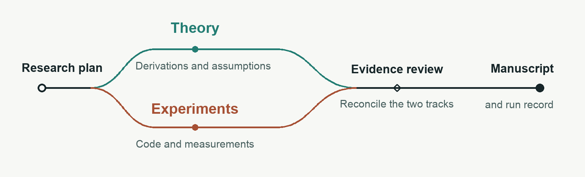

Testing a research hypothesis with pAI/MSc

Motivation
A machine learning hypothesis often needs two kinds of work before it can become a paper. Someone has to say exactly what the mathematics predicts, and someone has to design an experiment that could reveal a mistake. We built pAI/MSc to let a researcher steer both lines of inquiry and inspect the evidence behind the draft.
Prior work
The AI Scientist showed that agents could run machine learning experiments and write up their findings. Data-to-paper made the route from an analysis to a sentence in a manuscript inspectable. We drew on both ideas to address a recurring problem in theory work. A derivation and an experiment can each look convincing while answering slightly different questions.
What we delivered
We released an open-source system that writes a research plan, runs separate theory and experiment tracks, and checks where their findings agree. Researchers can inspect the code, assumptions and logs, redirect the work at checkpoints, and review the resulting manuscript. The team used its study of the Muon optimizer as a test case while developing the system.
Sources
- Accepted for a poster · AI for Science at NeurIPS 2026
- Accepted for a poster · Who Verifies the Agents? at NeurIPS 2026
- Workshop submission · AI for Meta-Science at NeurIPS 2026
- Technical report · arXiv
- Open-source implementation · GitHub
- Case study · What Muon changes during training
- Prior work · The AI Scientist
- Prior work · Data-to-paper